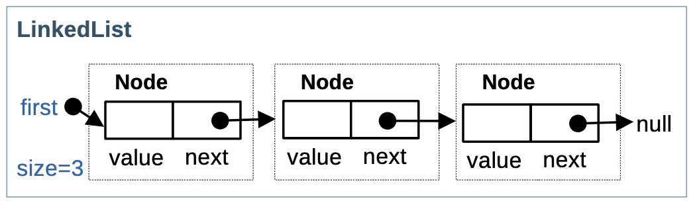

Use the provided files linkedList.h (view code | download code) and linkedList.c (view code | download code) as your base. These files contain the
declarations of the data structures (including Node and
LinkedList), function prototypes, and their implementations as presented in class.
The code implements a singly linked list in which the node values are of type NodeInfo, which for this problem corresponds to int.
The code includes the usual methods for adding and removing elements at the beginning or end, retrieving the list size, etc.
Extend the linked list implementation with a new function:
void duplicate(LinkedList *list) that duplicates every element of the list list.
In this problem, NodeInfo is of type int.
To submit on Mooshak, you must submit a file named submit.c, in which you include linkedList.h
and provide your implementation of the required duplicate function.
Mooshak will compile the files linkedList.c, submit.c, and test.c (provided separately, containing the main() function).
#include "linkedList.h"
// Forward declaration of function to implement
void duplicate(LinkedList *l);
void printList2(LinkedList *list) {
Node *curr= list->first;
printf("{");
if (curr==NULL) printf("}");
while (curr != NULL) {
printf("%d",curr->val);
curr= curr->next;
printf("%c",",}"[curr==NULL]);
}
}
void testInt(LinkedList *list) {
printf("list = ");
printList2(list);
printf("[size=%d]\n", list->size);
printf("duplicate()");
duplicate(list);
printf("\nlist = ");
printList2(list);
printf("[size=%d]\n", list->size);
printf("--------------------------------------\n");
}
int main() {
int ncases;
int n;
int value;
LinkedList l1;
scanf("%d",&ncases); // number of cases
for (int i=0; i<ncases; i++) {
initList(&l1);
scanf("%d",&n); // number of values in the list
for (int i=0; i<n; i++) {
scanf("%d",&value); // the values
addLast(&l1, value);
}
// test
testInt(&l1); // test this case
}
}
| Lista inicial | Chamada | Estado da lista depois da chamada |
|---|---|---|
| list = {1,2,3,4,5} | duplicate() | list = {1,1,2,2,3,3,4,4,5,5} |
| list = {} | duplicate() | list = {} |
| list = {1,2,2,3,2,1} | duplicate() | list = {1,1,2,2,2,2,3,3,2,2,1,1} |
Use como base o código linkedList.h (ver
código | (download
código) e linkedList.c (ver
código | (download
código) que contém as
declarações das estruturas de dados (incluindo Node e
LinkedList, funções protótipo e a sua implementação conforme
dado nas aulas. O código implementa uma lista ligada simples em que os
valores são do tipo NodeInfo que neste problema corresponde
ao tipo int. Inclui os métodos habituais de adicionar
e remover um elemento início ou
no final, devolver o tamanho, etc.
Acrescente à definição de listas ligadas uma nova função void
duplicate(LinkedList *list) que duplica cada elemento da lista list. O NodeInfo é um inteiro.
Para submeter no Mooshak, deverá submeter um programa
submit.c, no qual faça o "include" do ficheiro
linkedList.h e inclua a sua implementação da função
duplicate como pedido.
O Mooshak compilará os ficheiros linkedList.c,
submit.c e o test.c que se segue com a
função main().
#include "linkedList.h"
// Forward declaration of function to implement
void duplicate(LinkedList *l);
void printList2(LinkedList *list) {
Node *curr= list->first;
printf("{");
if (curr==NULL) printf("}");
while (curr != NULL) {
printf("%d",curr->val);
curr= curr->next;
printf("%c",",}"[curr==NULL]);
}
}
void testInt(LinkedList *list) {
printf("list = ");
printList2(list);
printf("[size=%d]\n", list->size);
printf("duplicate()");
duplicate(list);
printf("\nlist = ");
printList2(list);
printf("[size=%d]\n", list->size);
printf("--------------------------------------\n");
}
int main() {
int ncases;
int n;
int value;
LinkedList l1;
scanf("%d",&ncases); // number of cases
for (int i=0; i<ncases; i++) {
initList(&l1);
scanf("%d",&n); // number of values in the list
for (int i=0; i<n; i++) {
scanf("%d",&value); // the values
addLast(&l1, value);
}
// test
testInt(&l1); // test this case
}
}
| Lista inicial | Chamada | Estado da lista depois da chamada |
|---|---|---|
| list = {1,2,3,4,5} | duplicate() | list = {1,1,2,2,3,3,4,4,5,5} |
| list = {} | duplicate() | list = {} |
| list = {1,2,2,3,2,1} | duplicate() | list = {1,1,2,2,2,2,3,3,2,2,1,1} |
Content by Fernando Silva and Vanessa Silva (DCC/FCUP), copied from the original website.